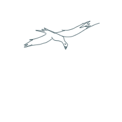

Здравствуйте!
Меня зовут Cергей Петрович. А иногда - Анна Ивановна. Я живу в деревне, вот моя фотография (то есть изображение, с фотоснимками какие-то сложности).
Я веселый человек, общительный. Рублю дрова, а зачем - сам не знаю. В наследство достался амулет от бабушки, она говорила "Внучка, как с мужчинами сближаться начнешь, достань амулет". Да ну ее, старую грымзу... Я амулет продала и с милым другом в турцию съездила, очень мне понравилось, фотки вот.

Так что живите своим умом, потому что какая разница, а своим не так обидно глупости совершать. Даже наоборот, иногда приятно.
Что-то я о себе, да о себе. Вот бывало солнце выглянет из-за туч, цвет неба проявится и станет красиво. Или еще бывает осенью трава желтая, потому что уже и высохла, и сгорела на солнце.
Сын поехал поступать в институт. Говорит на какие-то дурацкие должности идти не хочу, лучше бизнесом займусь. И смысл есть, и надежней. У него автосервис будет в Воронеже, говорит.
Смотрела по телевизору вестерн - там пустыня такая, пыль, здорово так. Вот и я думаю - распускают иногда нюни, мол ой красота, красота какая, деревца-деревца, а пустыня безжизненная. А я так не думаю. Там ящерица бежит и змея ползет.
Вот, а музыку какую слушаю... Не знаю как называется - они такие протяжные, длинные. И ритмичные тоже нравятся.